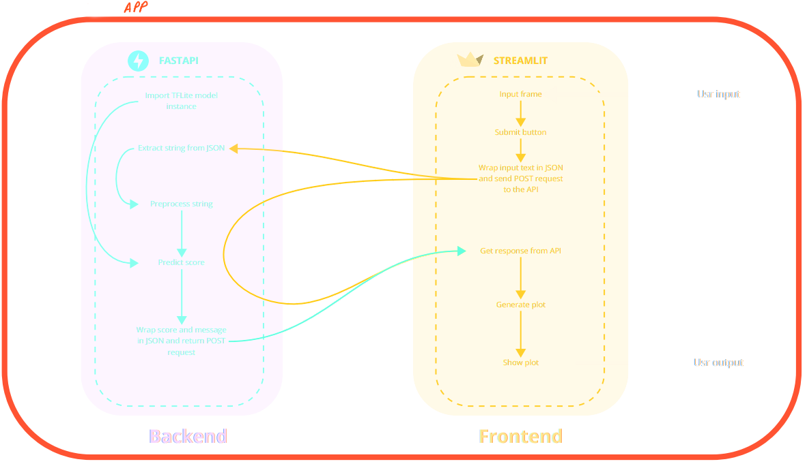

Ce repository contient le code source d'une application de prédiction de sentiment. Il a été réalisé dans le cadre du projet 7 de la formation Ingénieur IA de l'organisme OpenClassrooms.
Une entreprise souhaite pouvoir anticiper les bad buzz envers la marque. Le modèle développé est donc un moteur d’inférence de sentiment qui permet de détecter les mentions négatives sur les réseaux sociaux.
Pour mener à bien le projet, le jeu de données Sentiment140 a été utilisé. Ce dataset répertorie 1.6 million de tweets, annotés avec leur sentiment majoritaire : soit positif, soit négatif. Cette variable de sentiment est la target qu’on cherche à prédire. Au vu de l'objectif de modélisation, cette target a été réencodée en 1 pour les tweets négatifs et 0 pour les positifs. Les tweets ont été prétraités pour application d'analyse NLP :
Le modèle déployé est un réseau de neurones à couche LSTM (Long Short Term Memory). Les vecteurs de texte en entrée sont projetés par une couche de word embedding, ici une couche pré-entraînée fasttext-commoncrawl (300 dimensions). Les valeurs de sortie de l'embedder sont ensuite envoyés vers une couche récurrente de type LSTM bidirectionnelle, puis vers des couches denses qui calculent in fine la probabilité que le tweet exprime un sentiment négatif. Des couches de dropout avec la couche LSTM et entre les couches denses ont également été ajoutées pour faciliter l'entraînement du modèle.
Afin d'optimiser les performances du modèle, le logiciel Optuna a été utilisé. Cette hyperparamétrisation a consisté à sélectionner la meilleure combinaison d’embedder et de valeurs de dropout, grâce à l'algorithme d'échantillonnage TPE sampler. Après fine tuning, le modèle obtient une accuracy de 0.803 et une PR AUC de 0.887 (en comparaison, on obtient respectivement 0.518 et 0.532 pour une régression logistique).
Le modèle a été exposé sur API FastAPI, permettant de prédire le sentiment majoritaire d'un tweet, initialement déployée ici. Une application Streamlit faisant appel à cette API a été initialement déployée ici.
Lorsqu'un utilisateur entre un tweet dans l'application, cette dernière envoie une requête POST à l'API. L'API préprocesse le tweet reçu et, en l'absence d'erreur (texte vide, non anglophone, ou contenant trop de mots inconnus), prédit le sentiment associé. Ce score est ensuite retourné au frontend qui convertit cette réponse en image.

Un déploiement continue de l'application a été effectué via l'implémentation d'un workflow GitHub Actions. Lors d’un push, ce dernier compile l’API dans une image Docker, et envoie cette image vers une Azure Web App. Le frontend, lui, est déployé automatiquement depuis GitHub vers Streamlit Cloud.
Une piste d’amélioration pourrait consister à élargir le vocabulaire de l’embedding afin d’augmenter le nombre de mots pris en compte dans chaque tweet. Une autre mesure pourrait être d’augmenter la taille et le nombre des couches denses afin d’améliorer la séparation entre tweets positifs et négatifs.